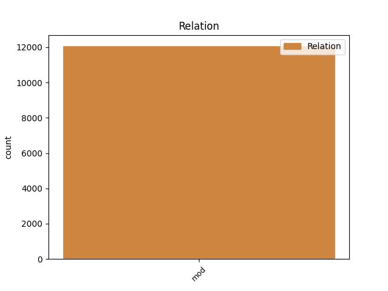
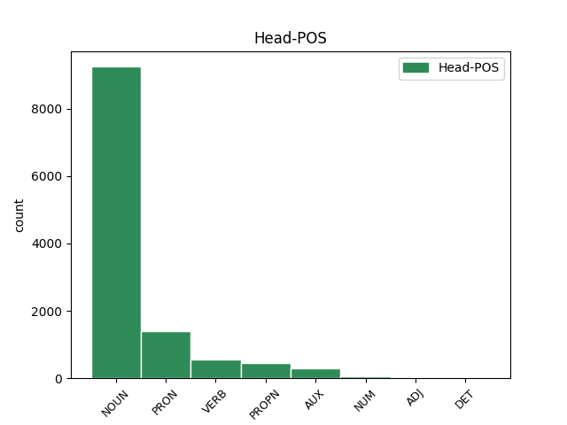
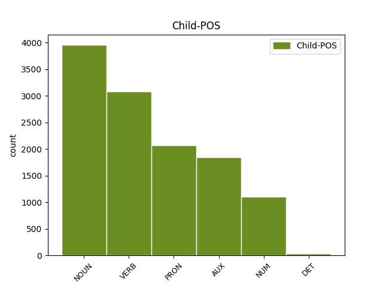

Distribution of features within this leaf



Agreement Rules sorted by frequency.
- When the dependent token is the modifer(mod) of the head token, and the dependent token is NOUN.
1 Care _ _ _ _ 0 _ _ _
2 s _ _ _ _ 0 _ _ _
3 -au _ _ _ _ 0 _ _ _
4 întărit _ _ _ _ 0 _ _ _
5 și _ _ _ _ 0 _ _ _
6 de _ _ _ _ 0 _ _ _
7 Domnia _ _ _ _ 0 _ _ _
8 mea _ _ _ _ 0 _ _ _
9 legiuindu _ _ _ _ 0 _ _ _
10 -să _ _ _ _ 0 _ _ _
11 și _ _ _ _ 0 _ _ _
12 aceaste _ _ _ _ 0 _ _ _
13 Ponturi _ _ _ _ 0 _ _ _
14 , _ _ _ _ 0 _ _ _
15 adăogat _ _ _ _ 0 _ _ _
16 în _ _ _ _ 0 _ _ _
17 pravela _ _ _ _ 0 _ _ _
18 pămîntului _ _ _ _ 0 _ _ _
19 , _ _ _ _ 0 _ _ _
20 supt _ _ _ _ 0 _ _ _
21 peceatea pecete NOUN Ncfsry Case=Acc,Nom|Definite=Def|Gender=Fem|Number=Sing 0 _ _ _
22 Domnii domnie NOUN Ncfsoy Case=Dat,Gen|Definite=Def|Gender=Fem|Number=Sing 21 mod _ ref=COMPLETARE.10
23 meale _ _ _ _ 0 _ _ _
24 precum _ _ _ _ 0 _ _ _
25 să _ _ _ _ 0 _ _ _
26 arată _ _ _ _ 0 _ _ _
27 mai _ _ _ _ 0 _ _ _
28 sus _ _ _ _ 0 _ _ _
29 , _ _ _ _ 0 _ _ _
30 care _ _ _ _ 0 _ _ _
31 s _ _ _ _ 0 _ _ _
32 -au _ _ _ _ 0 _ _ _
33 și _ _ _ _ 0 _ _ _
34 publicarisit _ _ _ _ 0 _ _ _
35 prin _ _ _ _ 0 _ _ _
36 toate _ _ _ _ 0 _ _ _
37 Judecătoriile _ _ _ _ 0 _ _ _
38 din _ _ _ _ 0 _ _ _
39 Domneasca _ _ _ _ 0 _ _ _
40 noastră _ _ _ _ 0 _ _ _
41 Ţară _ _ _ _ 0 _ _ _
42 , _ _ _ _ 0 _ _ _
43 și _ _ _ _ 0 _ _ _
44 cătră _ _ _ _ 0 _ _ _
45 toți _ _ _ _ 0 _ _ _
46 lăcuitorii _ _ _ _ 0 _ _ _
47 de _ _ _ _ 0 _ _ _
48 obște _ _ _ _ 0 _ _ _
49 ca _ _ _ _ 0 _ _ _
50 să _ _ _ _ 0 _ _ _
51 fie _ _ _ _ 0 _ _ _
52 știute _ _ _ _ 0 _ _ _
53 și _ _ _ _ 0 _ _ _
54 să _ _ _ _ 0 _ _ _
55 se _ _ _ _ 0 _ _ _
56 urmeaze _ _ _ _ 0 _ _ _
57 făr _ _ _ _ 0 _ _ _
58 de _ _ _ _ 0 _ _ _
59 strămutare _ _ _ _ 0 _ _ _
60 . _ _ _ _ 0 _ _ _
1 NOI _ _ _ _ 0 _ _ _
2 GRIGORIE _ _ _ _ 0 _ _ _
3 GHICA _ _ _ _ 0 _ _ _
4 VV. _ _ _ _ 0 _ _ _
5 , _ _ _ _ 0 _ _ _
6 DOMN _ _ _ _ 0 _ _ _
7 ŢĂRII _ _ _ _ 0 _ _ _
8 ROMÎNEŞTI _ _ _ _ 0 _ _ _
9 După _ _ _ _ 0 _ _ _
10 necontenitele _ _ _ _ 0 _ _ _
11 prigoniri _ _ _ _ 0 _ _ _
12 ce _ _ _ _ 0 _ _ _
13 să _ _ _ _ 0 _ _ _
14 urma _ _ _ _ 0 _ _ _
15 pînă _ _ _ _ 0 _ _ _
16 acum _ _ _ _ 0 _ _ _
17 între _ _ _ _ 0 _ _ _
18 stăpînii _ _ _ _ 0 _ _ _
19 moșiilor _ _ _ _ 0 _ _ _
20 cu _ _ _ _ 0 _ _ _
21 clăcașii _ _ _ _ 0 _ _ _
22 lor _ _ _ _ 0 _ _ _
23 asupra _ _ _ _ 0 _ _ _
24 ponturilor pont NOUN Ncfpoy Case=Dat,Gen|Definite=Def|Gender=Fem|Number=Plur 0 _ _ _
25 de _ _ _ _ 0 _ _ _
26 mai _ _ _ _ 0 _ _ _
27 sus _ _ _ _ 0 _ _ _
28 arătate arăta VERB Vmp--pf-p Gender=Fem|Number=Plur|Polarity=Pos|VerbForm=Part 24 mod _ ref=COMPLETARE.8|SpaceAfter=No
29 : _ _ _ _ 0 _ _ _
30 nefiind _ _ _ _ 0 _ _ _
31 deslușite _ _ _ _ 0 _ _ _
32 întru _ _ _ _ 0 _ _ _
33 această _ _ _ _ 0 _ _ _
34 Pravilă _ _ _ _ 0 _ _ _
35 a _ _ _ _ 0 _ _ _
36 pămîntului _ _ _ _ 0 _ _ _
37 . _ _ _ _ 0 _ _ _
1 NOI _ _ _ _ 0 _ _ _
2 GRIGORIE _ _ _ _ 0 _ _ _
3 GHICA _ _ _ _ 0 _ _ _
4 VV. _ _ _ _ 0 _ _ _
5 , _ _ _ _ 0 _ _ _
6 DOMN _ _ _ _ 0 _ _ _
7 ŢĂRII _ _ _ _ 0 _ _ _
8 ROMÎNEŞTI _ _ _ _ 0 _ _ _
9 După _ _ _ _ 0 _ _ _
10 necontenitele _ _ _ _ 0 _ _ _
11 prigoniri _ _ _ _ 0 _ _ _
12 ce _ _ _ _ 0 _ _ _
13 să _ _ _ _ 0 _ _ _
14 urma _ _ _ _ 0 _ _ _
15 pînă _ _ _ _ 0 _ _ _
16 acum _ _ _ _ 0 _ _ _
17 între _ _ _ _ 0 _ _ _
18 stăpînii _ _ _ _ 0 _ _ _
19 moșiilor _ _ _ _ 0 _ _ _
20 cu _ _ _ _ 0 _ _ _
21 clăcașii clăcaș NOUN Ncmpry Case=Acc,Nom|Definite=Def|Gender=Masc|Number=Plur 0 _ _ _
22 lor el PRON Pp3-pd--------s Case=Dat|Number=Plur|Person=3|PronType=Prs|Strength=Strong 21 mod _ ref=COMPLETARE.8
23 asupra _ _ _ _ 0 _ _ _
24 ponturilor _ _ _ _ 0 _ _ _
25 de _ _ _ _ 0 _ _ _
26 mai _ _ _ _ 0 _ _ _
27 sus _ _ _ _ 0 _ _ _
28 arătate _ _ _ _ 0 _ _ _
29 : _ _ _ _ 0 _ _ _
30 nefiind _ _ _ _ 0 _ _ _
31 deslușite _ _ _ _ 0 _ _ _
32 întru _ _ _ _ 0 _ _ _
33 această _ _ _ _ 0 _ _ _
34 Pravilă _ _ _ _ 0 _ _ _
35 a _ _ _ _ 0 _ _ _
36 pămîntului _ _ _ _ 0 _ _ _
37 . _ _ _ _ 0 _ _ _
1 Prin _ _ _ _ 0 _ _ _
2 obștească _ _ _ _ 0 _ _ _
3 chibzuire chibzuire NOUN Ncfsrn Case=Acc,Nom|Definite=Ind|Gender=Fem|Number=Sing 0 _ _ _
4 ce _ _ _ _ 0 _ _ _
5 s _ _ _ _ 0 _ _ _
6 -au avea AUX Vaip3s Mood=Ind|Number=Sing|Person=3|Tense=Pres 3 mod _ ref=COMPLETARE.9
7 făcut _ _ _ _ 0 _ _ _
8 în _ _ _ _ 0 _ _ _
9 scris _ _ _ _ 0 _ _ _
10 prin _ _ _ _ 0 _ _ _
11 Anafora _ _ _ _ 0 _ _ _
12 de _ _ _ _ 0 _ _ _
13 sfinția _ _ _ _ 0 _ _ _
14 lor _ _ _ _ 0 _ _ _
15 Părinți _ _ _ _ 0 _ _ _
16 Arhierei _ _ _ _ 0 _ _ _
17 și _ _ _ _ 0 _ _ _
18 de _ _ _ _ 0 _ _ _
19 Dumnealor _ _ _ _ 0 _ _ _
20 cinstiții _ _ _ _ 0 _ _ _
21 și _ _ _ _ 0 _ _ _
22 credincioșii _ _ _ _ 0 _ _ _
23 Boerii _ _ _ _ 0 _ _ _
24 Veliți _ _ _ _ 0 _ _ _
25 ai _ _ _ _ 0 _ _ _
26 divanului _ _ _ _ 0 _ _ _
27 Domnii _ _ _ _ 0 _ _ _
28 meale _ _ _ _ 0 _ _ _
29 , _ _ _ _ 0 _ _ _
30 Halea _ _ _ _ 0 _ _ _
31 și _ _ _ _ 0 _ _ _
32 mazilii _ _ _ _ 0 _ _ _
33 . _ _ _ _ 0 _ _ _
1 Ducîndu _ _ _ _ 0 _ _ _
2 -l _ _ _ _ 0 _ _ _
3 , _ _ _ _ 0 _ _ _
4 ori _ _ _ _ 0 _ _ _
5 la _ _ _ _ 0 _ _ _
6 moșia _ _ _ _ 0 _ _ _
7 lui _ _ _ _ 0 _ _ _
8 , _ _ _ _ 0 _ _ _
9 sau _ _ _ _ 0 _ _ _
10 aiurea _ _ _ _ 0 _ _ _
11 unde _ _ _ _ 0 _ _ _
12 are _ _ _ _ 0 _ _ _
13 trebuință _ _ _ _ 0 _ _ _
14 , _ _ _ _ 0 _ _ _
15 pînă _ _ _ _ 0 _ _ _
16 la _ _ _ _ 0 _ _ _
17 un _ _ _ _ 0 _ _ _
18 loc _ _ _ _ 0 _ _ _
19 cale _ _ _ _ 0 _ _ _
20 de _ _ _ _ 0 _ _ _
21 șase _ _ _ _ 0 _ _ _
22 ceasuri _ _ _ _ 0 _ _ _
23 , _ _ _ _ 0 _ _ _
24 iar _ _ _ _ 0 _ _ _
25 cînd _ _ _ _ 0 _ _ _
26 va _ _ _ _ 0 _ _ _
27 fi _ _ _ _ 0 _ _ _
28 locul _ _ _ _ 0 _ _ _
29 unde _ _ _ _ 0 _ _ _
30 ceare _ _ _ _ 0 _ _ _
31 stăpînul _ _ _ _ 0 _ _ _
32 mai _ _ _ _ 0 _ _ _
33 depărtat _ _ _ _ 0 _ _ _
34 decît _ _ _ _ 0 _ _ _
35 cale _ _ _ _ 0 _ _ _
36 de _ _ _ _ 0 _ _ _
37 șase _ _ _ _ 0 _ _ _
38 ceasuri _ _ _ _ 0 _ _ _
39 , _ _ _ _ 0 _ _ _
40 sau _ _ _ _ 0 _ _ _
41 nu _ _ _ _ 0 _ _ _
42 va _ _ _ _ 0 _ _ _
43 avea _ _ _ _ 0 _ _ _
44 stăpînul _ _ _ _ 0 _ _ _
45 trebuință _ _ _ _ 0 _ _ _
46 de _ _ _ _ 0 _ _ _
47 leamne _ _ _ _ 0 _ _ _
48 , _ _ _ _ 0 _ _ _
49 atunci _ _ _ _ 0 _ _ _
50 să _ _ _ _ 0 _ _ _
51 plătească _ _ _ _ 0 _ _ _
52 clăcașul _ _ _ _ 0 _ _ _
53 cu _ _ _ _ 0 _ _ _
54 bani _ _ _ _ 0 _ _ _
55 , _ _ _ _ 0 _ _ _
56 carul _ _ _ _ 0 _ _ _
57 po _ _ _ _ 0 _ _ _
58 talere taler NOUN Ncfprn Case=Acc,Nom|Definite=Ind|Gender=Fem|Number=Plur 0 _ _ _
59 trei trei NUM Mcmp-l Gender=Masc|Number=Plur|NumForm=Word|NumType=Card 58 mod _ ref=COMPLETARE.6|SpaceAfter=No
60 . _ _ _ _ 0 _ _ _
1 La _ _ _ _ 0 _ _ _
2 tocmealele _ _ _ _ 0 _ _ _
3 ceale _ _ _ _ 0 _ _ _
4 întunecoase _ _ _ _ 0 _ _ _
5 , _ _ _ _ 0 _ _ _
6 priimim _ _ _ _ 0 _ _ _
7 ceia _ _ _ _ 0 _ _ _
8 ce _ _ _ _ 0 _ _ _
9 iaste _ _ _ _ 0 _ _ _
10 mai _ _ _ _ 0 _ _ _
11 de _ _ _ _ 0 _ _ _
12 crezut _ _ _ _ 0 _ _ _
13 , _ _ _ _ 0 _ _ _
14 sau _ _ _ _ 0 _ _ _
15 ceia _ _ _ _ 0 _ _ _
16 ce _ _ _ _ 0 _ _ _
17 să _ _ _ _ 0 _ _ _
18 face _ _ _ _ 0 _ _ _
19 mai _ _ _ _ 0 _ _ _
20 de _ _ _ _ 0 _ _ _
21 multe mult DET Di3fpr Case=Acc,Nom|Gender=Fem|Number=Plur|Person=3|PronType=Ind 22 mod _ ref=PART_V_CAP_2a.11
22 ori oară NOUN Ncfprn Case=Acc,Nom|Definite=Ind|Gender=Fem|Number=Plur 0 _ _ _
23 . _ _ _ _ 0 _ _ _
Disagree Examples:
1 Și _ _ _ _ 0 _ _ _
2 deaca _ _ _ _ 0 _ _ _
3 -l _ _ _ _ 0 _ _ _
4 samănă _ _ _ _ 0 _ _ _
5 , _ _ _ _ 0 _ _ _
6 creaște _ _ _ _ 0 _ _ _
7 și _ _ _ _ 0 _ _ _
8 să _ _ _ _ 0 _ _ _
9 face _ _ _ _ 0 _ _ _
10 mai _ _ _ _ 0 _ _ _
11 mare _ _ _ _ 0 _ _ _
12 de _ _ _ _ 0 _ _ _
13 toate _ _ _ _ 0 _ _ _
14 buruianele _ _ _ _ 0 _ _ _
15 și _ _ _ _ 0 _ _ _
16 face face VERB Vmip3s Mood=Ind|Number=Sing|Person=3|Tense=Pres|VerbForm=Fin 0 _ _ _
17 stîlpări _ _ _ _ 0 _ _ _
18 mari _ _ _ _ 0 _ _ _
19 , _ _ _ _ 0 _ _ _
20 cît _ _ _ _ 0 _ _ _
21 pot putea VERB Vmip3p Mood=Ind|Number=Plur|Person=3|Tense=Pres|VerbForm=Fin 16 mod _ ref=MARC4.32|SpaceAfter=No
22 , _ _ _ _ 0 _ _ _
23 supt _ _ _ _ 0 _ _ _
24 umbra _ _ _ _ 0 _ _ _
25 lui _ _ _ _ 0 _ _ _
26 , _ _ _ _ 0 _ _ _
27 păsările _ _ _ _ 0 _ _ _
28 ceriului _ _ _ _ 0 _ _ _
29 să _ _ _ _ 0 _ _ _
30 sălășuiască _ _ _ _ 0 _ _ _
31 . _ _ _ _ 0 _ _ _
1 Și _ _ _ _ 0 _ _ _
2 deaca _ _ _ _ 0 _ _ _
3 -l _ _ _ _ 0 _ _ _
4 samănă _ _ _ _ 0 _ _ _
5 , _ _ _ _ 0 _ _ _
6 creaște _ _ _ _ 0 _ _ _
7 și _ _ _ _ 0 _ _ _
8 să _ _ _ _ 0 _ _ _
9 face _ _ _ _ 0 _ _ _
10 mai _ _ _ _ 0 _ _ _
11 mare _ _ _ _ 0 _ _ _
12 de _ _ _ _ 0 _ _ _
13 toate _ _ _ _ 0 _ _ _
14 buruianele _ _ _ _ 0 _ _ _
15 și _ _ _ _ 0 _ _ _
16 face _ _ _ _ 0 _ _ _
17 stîlpări _ _ _ _ 0 _ _ _
18 mari _ _ _ _ 0 _ _ _
19 , _ _ _ _ 0 _ _ _
20 cît _ _ _ _ 0 _ _ _
21 pot _ _ _ _ 0 _ _ _
22 , _ _ _ _ 0 _ _ _
23 supt _ _ _ _ 0 _ _ _
24 umbra _ _ _ _ 0 _ _ _
25 lui _ _ _ _ 0 _ _ _
26 , _ _ _ _ 0 _ _ _
27 păsările pasăre NOUN Ncfpry Case=Acc,Nom|Definite=Def|Gender=Fem|Number=Plur 0 _ _ _
28 ceriului cer NOUN Ncmsoy Case=Dat,Gen|Definite=Def|Gender=Masc|Number=Sing 27 mod _ ref=MARC4.32
29 să _ _ _ _ 0 _ _ _
30 sălășuiască _ _ _ _ 0 _ _ _
31 . _ _ _ _ 0 _ _ _
1 Iară _ _ _ _ 0 _ _ _
2 fără _ _ _ _ 0 _ _ _
3 pildă _ _ _ _ 0 _ _ _
4 nu _ _ _ _ 0 _ _ _
5 grăiia _ _ _ _ 0 _ _ _
6 lor _ _ _ _ 0 _ _ _
7 , _ _ _ _ 0 _ _ _
8 dară _ _ _ _ 0 _ _ _
9 deusebi _ _ _ _ 0 _ _ _
10 ucenicilor ucenic NOUN Ncmpoy Case=Dat,Gen|Definite=Def|Gender=Masc|Number=Plur 0 _ _ _
11 lui el PRON Pp3mso Case=Gen|Gender=Masc|Number=Sing|Person=3|PronType=Prs 10 mod _ ref=MARC4.34
12 toate _ _ _ _ 0 _ _ _
13 le _ _ _ _ 0 _ _ _
14 spunea _ _ _ _ 0 _ _ _
15 . _ _ _ _ 0 _ _ _
1 Și _ _ _ _ 0 _ _ _
2 veniră _ _ _ _ 0 _ _ _
3 în _ _ _ _ 0 _ _ _
4 ceaia _ _ _ _ 0 _ _ _
5 parte _ _ _ _ 0 _ _ _
6 de _ _ _ _ 0 _ _ _
7 mare _ _ _ _ 0 _ _ _
8 în _ _ _ _ 0 _ _ _
9 laturea latură NOUN Ncfsry Case=Acc,Nom|Definite=Def|Gender=Fem|Number=Sing 0 _ _ _
10 gadarineanilor gadarinean NOUN Ncmpoy Case=Dat,Gen|Definite=Def|Gender=Masc|Number=Plur 9 mod _ ref=MARC5.1|SpaceAfter=No
11 . _ _ _ _ 0 _ _ _
1 Și _ _ _ _ 0 _ _ _
2 eșind _ _ _ _ 0 _ _ _
3 duhurele _ _ _ _ 0 _ _ _
4 ceale _ _ _ _ 0 _ _ _
5 necurate _ _ _ _ 0 _ _ _
6 , _ _ _ _ 0 _ _ _
7 întrară _ _ _ _ 0 _ _ _
8 în _ _ _ _ 0 _ _ _
9 porci _ _ _ _ 0 _ _ _
10 și _ _ _ _ 0 _ _ _
11 năvăli _ _ _ _ 0 _ _ _
12 turma _ _ _ _ 0 _ _ _
13 de _ _ _ _ 0 _ _ _
14 pre _ _ _ _ 0 _ _ _
15 țărmure _ _ _ _ 0 _ _ _
16 , _ _ _ _ 0 _ _ _
17 sări _ _ _ _ 0 _ _ _
18 în _ _ _ _ 0 _ _ _
19 mare _ _ _ _ 0 _ _ _
20 ( _ _ _ _ 0 _ _ _
21 și _ _ _ _ 0 _ _ _
22 era _ _ _ _ 0 _ _ _
23 ca _ _ _ _ 0 _ _ _
24 la _ _ _ _ 0 _ _ _
25 doao doi NUM Mcfprln Case=Acc,Nom|Definite=Ind|Gender=Fem|Number=Plur|NumForm=Word|NumType=Card 26 mod _ ref=MARC5.13
26 mie mie NUM Mcfsrln Case=Acc,Nom|Definite=Ind|Gender=Fem|Number=Sing|NumForm=Word|NumType=Card 0 _ _ _
27 ) _ _ _ _ 0 _ _ _
28 și _ _ _ _ 0 _ _ _
29 să _ _ _ _ 0 _ _ _
30 înecară _ _ _ _ 0 _ _ _
31 în _ _ _ _ 0 _ _ _
32 mare _ _ _ _ 0 _ _ _
33 . _ _ _ _ 0 _ _ _